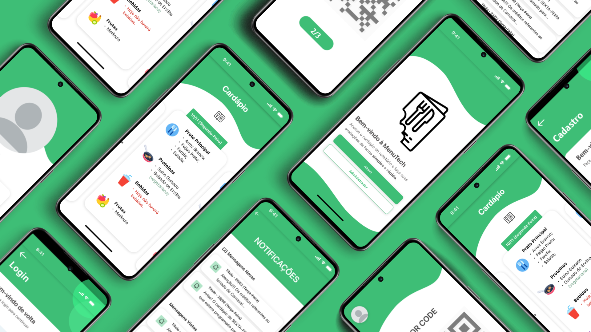
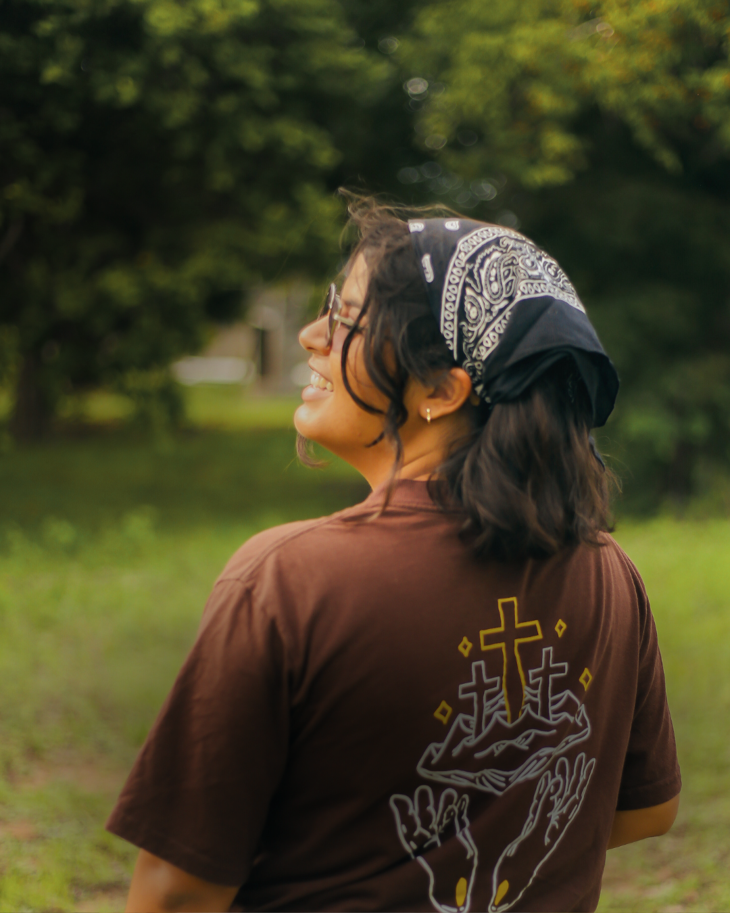
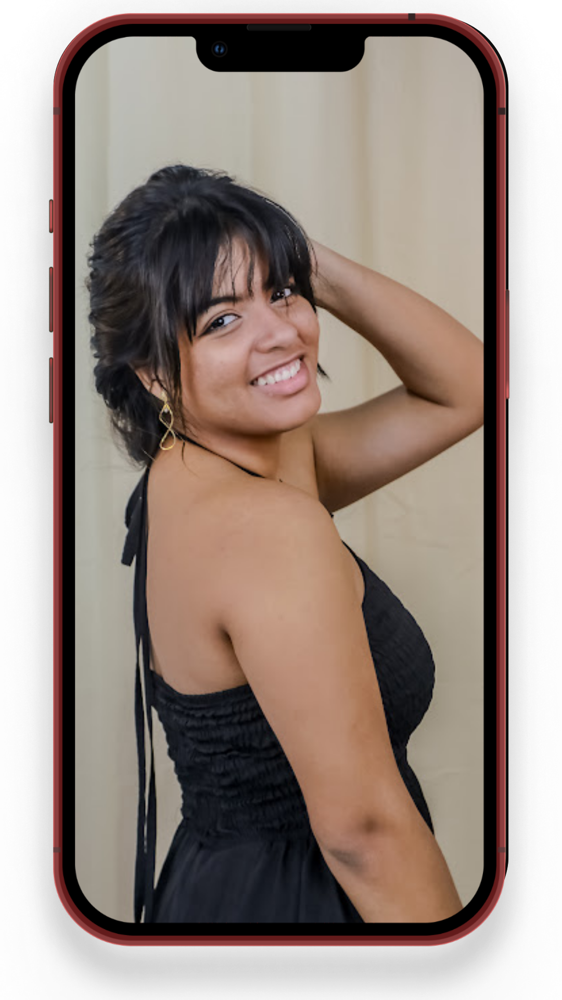
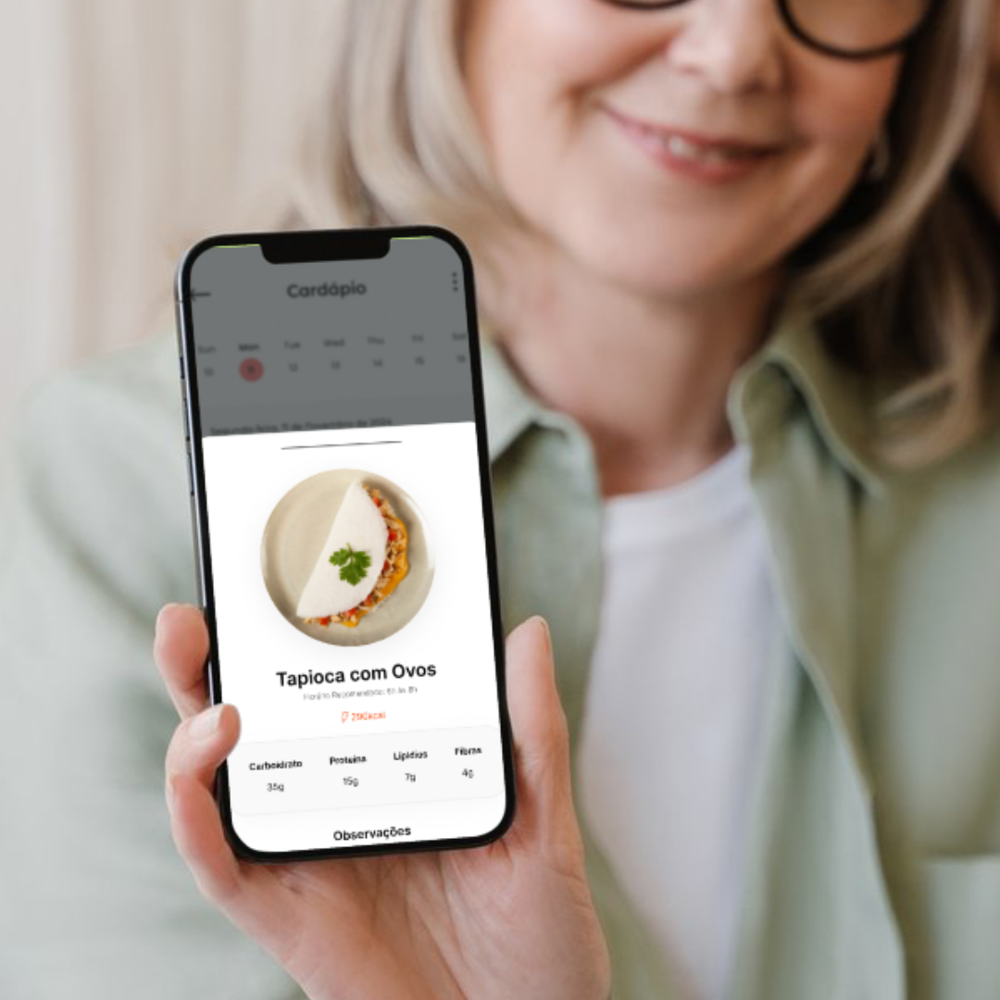
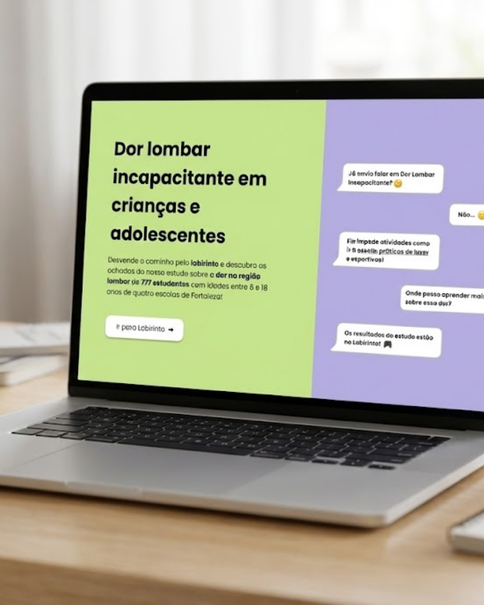

Menutech
O Menutech é um aplicativo que visa revolucionar a experiência do refeitório acadêmico, atendendo as demandas de toda a comunidade academica, desde os alunos até a equipe administrativa.
Ler MaisEste portfólio reúne alguns de meus projetos que utilizam conceitos de Graphic Design, UI/UX, Social Media e Software Development. Um compilado de projetos onde o código encontra a forma para resolver problemas reais.


Desde pequena, com uma mãe pedagoga e um pai contador de histórias, eu passava horas lendo, escrevendo, recortando, desenhando, pintando e me aventurando nos desafios que eu encontrava ou que colocava no meu caminho. Aos 14 anos, entrei para o curso técnico integrado ao médio de Informática no Instituto Federal do Ceará (IFCE) e descobri algo muito interessante: transformar ideias em realidade não acontece apenas no mundo físico, mas também no digital. Foi assim que percebi que a comunicação visual é tão essencial quanto as linhas de código, entendendo a computação como uma ciência que não pertence apenas ao campo das exatas, mas também das humanas - é preciso entender o porquê, o para quê e para quem um projeto é feito.

O Menutech é um aplicativo que visa revolucionar a experiência do refeitório acadêmico, atendendo as demandas de toda a comunidade academica, desde os alunos até a equipe administrativa.
Ler Mais
O HelpMeMo é uma plataforma gameficada de cunho educacional, onde a proposta se constrói na interação com Jogos da Memória e Tabela de Frequência, diretamente relacionados ao aprendizado das disciplinas de matemática, sociologia e Segurança e Higiene do Trabalho (HST).
Ler Mais
Um aplicativo que nutricionistas podem fazer o acompanhamento da rotina de de alimentação e consumo de água dos seus pacientes. Seu objetivo é Facilitar o acompanhamento nutricional, por meio da interatividade intuitiva e prática entre o profissional da área (Nutricionista) e seu paciente.
Ler MaisAo longo da minha jornada, o meu interesse não ficou apenas no desenvolvimento ou design de interfaces, mas se estendeu para outros nichos do design gráfico, incluindo a comunicação. Aqui você pode encontrar alguns dos meus trabalhos.
Ver conteúdos
Formação técnica com foco em programação, desenvolvimento de software, web, mobile e metodologias ágeis. Experiência em projetos práticos e aplicação de tecnologias no mercado.
Bacharelado, atua no desenvolvimento de sistemas multimídia de forma diversificada: desde a área de sistemas tradicionais de computadores até jogos digitais. Interação entre programação de sistemas digitais e comunicação baseadas e recursos multimídia.